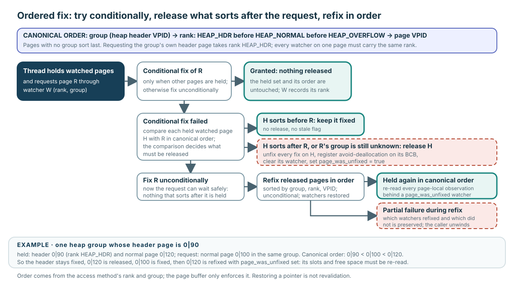

A watcher is normal page debt plus ordering history
PGBUF_WATCHER carries the current page pointer/ownership state and metadata used to order a set of pages. It does not replace fix debt; it makes the debt movable and auditable across a multi-page protocol.
| Watcher information | Who supplies or interprets it? |
|---|---|
| Group | The access method supplies the semantic group—for heap pages, the heap-header VPID. |
| Rank | The access method supplies semantic order: heap header before normal before overflow. |
| VPID | Page buffer uses it as the final ordering coordinate. |
page_was_unfixed | Page buffer reports that this watcher crossed a release/refix window; the caller must rebuild observations. |
The access method defines meaning and order. The page-buffer Module enforces the ordered ownership transition.
Group → rank → VPID
Within the representative heap protocol, pages compare by:
- group: heap-header VPID,
- rank:
HEAP_HDR < HEAP_NORMAL < HEAP_OVERFLOW, then - VPID: deterministic order within the same group/rank.
Pages without a known group sort last. Every watcher for the same page must agree on rank. This order is an access-method owner protocol, not a universal semantic ordering invented by page buffer.
Try cheaply; release only what violates the requested order

A successful conditional fix releases nothing. Reordering begins only after the conditional attempt fails.
- Try to fix requested page R conditionally while other watched pages remain held.
- If granted, record R and stop: no borrowed lifetime was interrupted.
- If rejected, compare every held watcher H with R.
- Keep H fixed when H sorts before R.
- Fully unfix H when it sorts after R—or when R’s group is still unknown—while registering avoid-deallocation and marking its watcher as having been unfixed.
- Fix R unconditionally, then refix released pages in sorted order.
- On partial failure, preserve exactly which watchers returned and which remain released so the caller can unwind.
Verified mechanism: pinned ordered helpers and callbacks are page_buffer.c:12268–13531.
Keep 0|90; insert 0|100 before 0|120
| Page | Role/order | Action after conditional failure |
|---|---|---|
| Held 0|90 | Heap header; sorts first | Keep continuously fixed. |
| Requested 0|100 | Normal; sorts second | Fix unconditionally after later pages are released. |
| Held 0|120 | Normal; sorts third | Fully unfix, then refix after 0|100; set page_was_unfixed. |
The final held order is 0|90 < 0|100 < 0|120. Observations derived from 0|90 remained protected. Observations derived from 0|120 did not.
A restored pointer is not restored knowledge
For every watcher with page_was_unfixed=true, reconstruct:
- record and slot pointers,
- free-space and destination choices,
- page headers and type/identity-dependent fields,
- relationships to the other held pages, and
- the access-method condition that justified the operation.
Do not globally discard continuously protected observations. The watcher flag gives a precise boundary: rebuild knowledge behind the released watcher, and separately revalidate cross-page conclusions that depended on it.
Audit each watcher, not just the function result
If R succeeds but a later refix fails, the held set is mixed. Some watchers may already be restored, some still carry release state, and R may itself be held. A correct caller or helper unwind must consume or retain each debt exactly once and preserve avoid-deallocation balance.
Representative caller boundary: heap destination/watcher ownership is pinned heap_file.c:20493–20664. This caller supplies heap meaning that generic page-buffer ordering cannot infer.
Produce a watcher-by-watcher ledger
Prompt
One heap group holds header 0|90 and normal page 0|120. It requests normal page 0|100; the conditional attempt fails. Later, refixing 0|120 also fails.
Your task: order the pages; trace every release/acquisition; identify which observations survive; then list the final ownership questions the partial-failure unwind must answer.
Paste your answer into the chat. I will check order ownership, selective release, observation lifetime, and partial-failure debt before recording Advanced progress.
Mark every watcher transition
Read pinned page_buffer.c:12268–13531. Annotate comparison coordinates, conditional attempt, selective full unfix, avoid-deallocation registration, requested-page acquisition, sorted refix, page_was_unfixed, and every partial-failure exit.